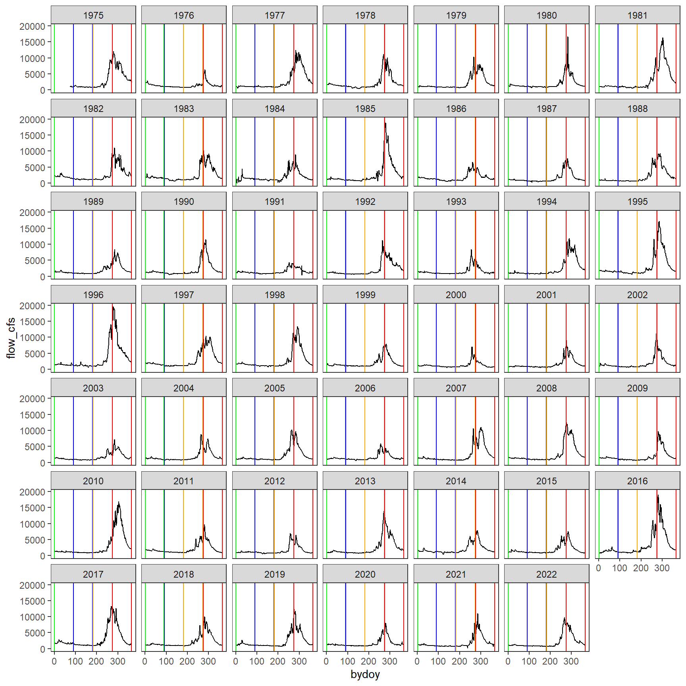
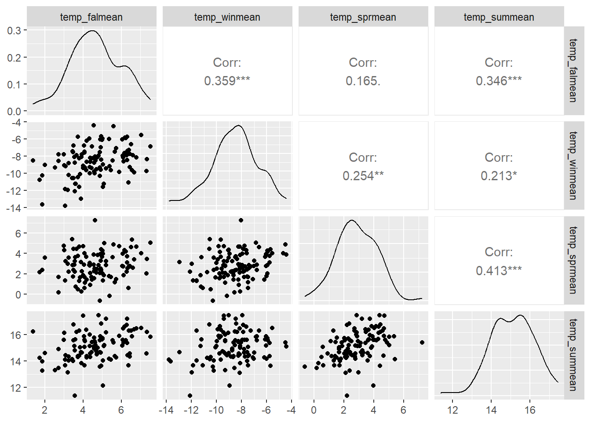
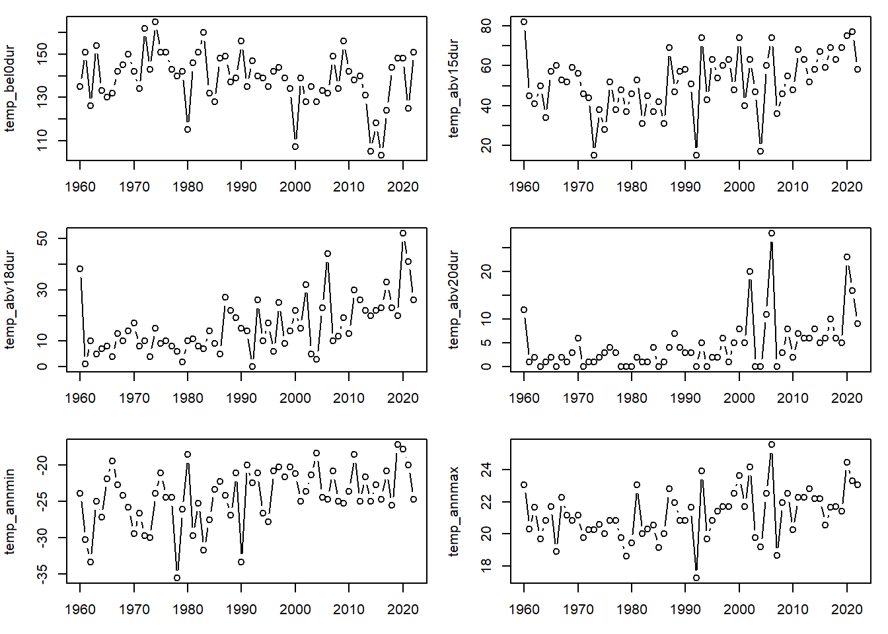
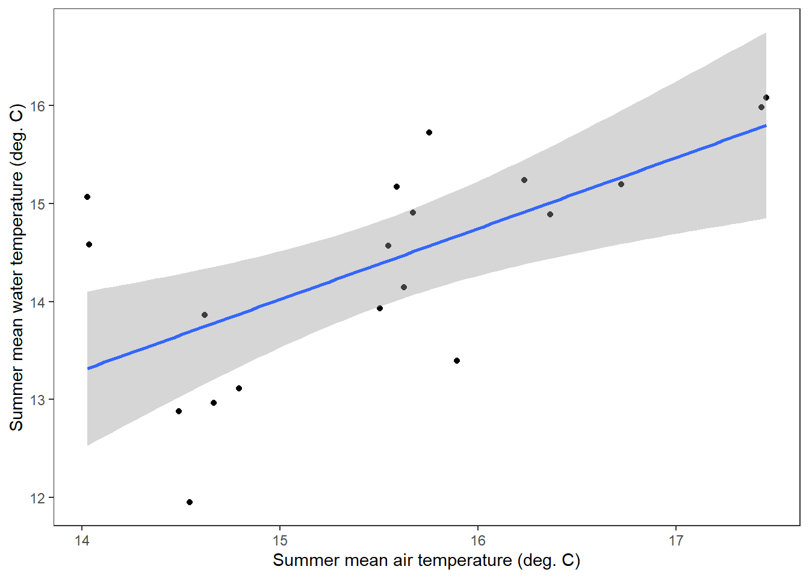

Pearson's product-moment correlation
data: flow2$SnakeNat and flow2$SnakeMoran
t = 95.373, df = 17458, p-value < 2.2e-16
alternative hypothesis: true correlation is not equal to 0
95 percent confidence interval:
0.5754375 0.5949431
sample estimates:
cor
0.585275
Calculate first-differenced daily flow after log transform, rate of daily change in flow per Ward et al. 2015, Global Change Biology (enables calculation of flow variability)
Plot JLD releases with winter and summer periods marked
Code
flow3 %>%#filter(broodyr >= 2014) %>% ggplot() +geom_line(aes(x = bydoy, y = SnakeMoran)) +geom_vline(xintercept =c(45,211), color ="blue") +# winter = Oct 15 - March 31geom_vline(xintercept =c(91,180), color ="dodgerblue") +# winter = Dec 1 - Feb 28/29geom_vline(xintercept =c(303,365), color ="red") +# summer = July 1 - August 31facet_wrap(~ broodyr) +theme_bw() +theme(panel.grid =element_blank())
par(mfrow =c(4,3), mar =c(3,4,1,1))plot(jld_winmean ~ broodyr, jldflow, type ="b")plot(jld_winmean_log ~ broodyr, jldflow, type ="b")plot(jld_winvar ~ broodyr, jldflow, type ="b")plot(jld_sprmean ~ broodyr, jldflow, type ="b")plot(jld_sprmean_log ~ broodyr, jldflow, type ="b")plot(jld_sprvar ~ broodyr, jldflow, type ="b")plot(jld_summean ~ broodyr, jldflow, type ="b")plot(jld_summean_log ~ broodyr, jldflow, type ="b")plot(jld_sumvar ~ broodyr, jldflow, type ="b")plot(jld_peakmag ~ broodyr, jldflow, type ="b")plot(jld_peakmag_log ~ broodyr, jldflow, type ="b")plot(jld_peaktime ~ broodyr, jldflow, type ="b")
Annual and seasonal minimum flow. Horiztonal red line denotes 280 cfs. Vertical grey line denotes 1989.
Code
par(mfrow =c(2,2), mar =c(3,4,1,1))plot(jld_annmin ~ broodyr, jldflow, type ="b")abline(h = (280), col ="red", lty =2)abline(v = (1989), col ="black", lty =2)plot(jld_winmin ~ broodyr, jldflow, type ="b")abline(h = (280), col ="red", lty =2)abline(v = (1989), col ="black", lty =2)plot(jld_sprmin ~ broodyr, jldflow, type ="b")abline(h = (280), col ="red", lty =2)abline(v = (1989), col ="black", lty =2)plot(jld_summin ~ broodyr, jldflow, type ="b")abline(h = (280), col ="red", lty =2)abline(v = (1989), col ="black", lty =2)
Log scale
Code
par(mfrow =c(2,2), mar =c(3,4,1,1))plot((jld_annmin_log) ~ broodyr, jldflow, type ="b")abline(h =log(280), col ="red", lty =2)plot((jld_winmin_log) ~ broodyr, jldflow, type ="b")abline(h =log(280), col ="red", lty =2)plot((jld_sprmin_log) ~ broodyr, jldflow, type ="b")abline(h =log(280), col ="red", lty =2)plot((jld_summin_log) ~ broodyr, jldflow, type ="b")abline(h =log(280), col ="red", lty =2)
View time series data by stream and year, with seasons marked
Code
flow6 %>%filter(site =="SnakeNat", broodyr >=1975) %>%ggplot() +geom_line(aes(x = bydoy, y = flow_cfs)) +geom_vline(xintercept =c(1,90), color ="green") +# fall = Sept 1 - Nov 30geom_vline(xintercept =c(91,181), color ="blue") +# winter = Dec 1 - Feb 29geom_vline(xintercept =c(182,274), color ="orange") +# spring = March 1 - May 31geom_vline(xintercept =c(275,365), color ="red") +# summer = June 1 - Aug 31facet_wrap(~ broodyr) +theme_bw() +theme(panel.grid =element_blank())

Calculate flow metrics for each sites
Code
# define season and cutoff for data completeness (70%)flow6 <- flow6 %>%mutate(season =ifelse(bydoy >=1& bydoy <=90, "fal",ifelse(bydoy >=91& bydoy <=181, "win",ifelse(bydoy >=182& bydoy <=274, "spr", "sum"))),cutoff =ifelse(season =="fal", 63, ifelse(season =="win", 63,ifelse(season =="spr", 63, 63))))flow6 <- flow6 %>%left_join(flow6 %>%group_by(site, broodyr, season) %>%summarise(n =sum(!is.na(flow_cfs))))# define seasons for loopsns <-unique(flow6$season)# seasonal mean flowflowlist <-list()for (i in1:length(sns)) { d <- flow6 %>%filter(season == sns[i]) d <- d[complete.cases(d),] flowlist[[i]] <- d %>%group_by(site, season, broodyr, cutoff, n) %>%summarize(flowmean =ifelse(unique(n) <=unique(cutoff), NA, mean(flow_cfs, na.rm =TRUE))) %>%ungroup() %>%select(site, season, broodyr, flowmean) }flowsum1 <-bind_rows(flowlist) %>%spread(season, flowmean) %>%rename(natq_falmean = fal, natq_winmean = win, natq_sprmean = spr, natq_summean = sum)# seasonal log flow flowlist <-list()for (i in1:length(sns)) { d <- flow6 %>%filter(season == sns[i]) d <- d[complete.cases(d),] flowlist[[i]] <- d %>%group_by(site, season, broodyr, cutoff, n) %>%summarize(flowmean_log =ifelse(unique(n) <=unique(cutoff), NA, mean(log(flow_cfs), na.rm =TRUE))) %>%ungroup() %>%select(site, season, broodyr, flowmean_log) }flowsum2 <-bind_rows(flowlist) %>%spread(season, flowmean_log) %>%rename(natq_falmean_log = fal, natq_winmean_log = win, natq_sprmean_log = spr, natq_summean_log = sum)# seasonal flow variationflowlist <-list()for (i in1:length(sns)) { d <- flow6 %>%filter(season == sns[i]) d <- d[complete.cases(d),] flowlist[[i]] <- d %>%group_by(site, season, broodyr, cutoff, n) %>%summarize(flowvar =ifelse(unique(n) <=unique(cutoff), NA, sd(flow_var, na.rm =TRUE))) %>%ungroup() %>%select(site, season, broodyr, flowvar) }flowsum3 <-bind_rows(flowlist) %>%spread(season, flowvar) %>%rename(natq_falvar = fal, natq_winvar = win, natq_sprvar = spr, natq_sumvar = sum)# annual flow metrics (no data availability cutoff)flowlist <-list()sites <-unique(flow6$site)for (i in1:length(sites)) { d <- flow6 %>%filter(site == sites[i]) d <- d[complete.cases(d),] flowlist[[i]] <- d %>%group_by(site, broodyr) %>%summarize(natq_peakmag =max(flow_cfs, na.rm =TRUE), # magnitude of peak spring flowsnatq_peakmag_log =max(log(flow_cfs), na.rm =TRUE), # loggednatq_annmin =min(flow_cfs, na.rm =TRUE), # annual minimum flownatq_annmin_log =min(log(flow_cfs), na.rm =TRUE), # loggednatq_peaktime = bydoy[which.max(flow_cfs)], # brood year day of peak spring flowsnatq_flooddur =sum(flow_cfs >=quantile(d$flow_cfs[!is.na(d$flow_cfs)], probs =0.75), na.rm = T), # number of days flow is greater than the long-term 75th percentile of flownatq_floodvar =sd(flow_var[flow_cfs >=quantile(d$flow_cfs[!is.na(d$flow_cfs)], probs =0.75)], na.rm =TRUE), # spring/summer flood variability (var in flood pulse)natq_floodmag =sum(flow_cfs[flow_cfs >=quantile(d$flow_cfs[!is.na(d$flow_cfs)], probs =0.75)], na.rm = T) # magnitude of spring flood (flow > long-term 75th percentile) ) %>%ungroup()}flowsum4 <-bind_rows(flowlist) # joinflowsum <- flowsum1 %>%left_join(flowsum2) %>%left_join(flowsum3) %>%left_join(flowsum4)
Plot time series data (natural Snake River only)
Code
d <- flowsum %>%filter(site =="SnakeNat")par(mfrow =c(7,3), mar =c(3,4,1,1))plot(natq_falmean ~ broodyr, d, type ="b")plot(natq_falmean_log ~ broodyr, d, type ="b")plot(natq_falvar ~ broodyr, d, type ="b")plot(natq_winmean ~ broodyr, d, type ="b")plot(natq_winmean_log ~ broodyr, d, type ="b")plot(natq_winvar ~ broodyr, d, type ="b")plot(natq_sprmean ~ broodyr, d, type ="b")plot(natq_sprmean_log ~ broodyr, d, type ="b")plot(natq_sprvar ~ broodyr, d, type ="b")plot(natq_summean ~ broodyr, d, type ="b")plot(natq_summean_log ~ broodyr, d, type ="b")plot(natq_sumvar ~ broodyr, d, type ="b")plot(natq_peakmag ~ broodyr, d, type ="b")plot(natq_peakmag_log ~ broodyr, d, type ="b")plot(natq_peaktime ~ broodyr, d, type ="b")plot(natq_flooddur ~ broodyr, d, type ="b")plot(natq_floodvar ~ broodyr, d, type ="b")plot(natq_floodmag ~ broodyr, d, type ="b")plot(natq_annmin ~ broodyr, d, type ="b")plot(natq_annmin_log ~ broodyr, d, type ="b")
airtemp2 %>%filter(site =="moose") %>%ggplot() +geom_line(aes(x = bydoy, y = tmean)) +geom_vline(xintercept =c(1,90), color ="green") +# fall = Sept 1 - Nov 30geom_vline(xintercept =c(91,181), color ="blue") +# winter = Dec 1 - Feb 29geom_vline(xintercept =c(182,274), color ="orange") +# spring = March 1 - May 31geom_vline(xintercept =c(275,365), color ="red") +# summer = June 1 - Aug 31facet_wrap(~ broodyr) +# summer = June 1 - Aug 31facet_wrap(~ broodyr) +theme_bw() +theme(panel.grid =element_blank())
d <- airsum %>%filter(site =="moose")par(mfrow =c(4,3), mar =c(3,4,1,1))plot(temp_falmean ~ broodyr, d, type ="b")legend("bottomright", legend = sites[i], bty ="n")plot(temp_falmin ~ broodyr, d, type ="b")plot(temp_falmax ~ broodyr, d, type ="b")plot(temp_winmean ~ broodyr, d, type ="b")plot(temp_winmin ~ broodyr, d, type ="b")plot(temp_winmax ~ broodyr, d, type ="b")plot(temp_sprmean ~ broodyr, d, type ="b")plot(temp_sprmin ~ broodyr, d, type ="b")plot(temp_sprmax ~ broodyr, d, type ="b")plot(temp_summean ~ broodyr, d, type ="b")plot(temp_summin ~ broodyr, d, type ="b")plot(temp_summax ~ broodyr, d, type ="b")
Compare summer mean and min temps per Bryan Shuman comment
Code
# jpeg("Redd Counts Ricker/SummerTempCovs.jpg", units = "in", height = 6, width = 8, res = 500)p1 <- airsum %>%filter(site =="moose") %>%ggplot(aes(x = broodyr, y = temp_summean)) +geom_point() +geom_line() +xlab("Brood Year") +ylab("Summer mean temperature") +theme(plot.margin =margin(0.5,0.5,0.5,0.5, unit ="cm"))p2 <- airsum %>%filter(site =="moose") %>%ggplot(aes(x = broodyr, y = temp_summin)) +geom_point() +geom_line() +xlab("Brood Year") +ylab("Summer minimum temperature") +theme(plot.margin =margin(0.5,0.5,0.5,0.5, unit ="cm"))p3 <- airsum %>%filter(site =="moose") %>%ggplot(aes(x = temp_summean, y = temp_summin)) +geom_point() +xlab("Mean") +ylab("Minimum") +stat_cor(method ="pearson") +theme(plot.margin =margin(0.5,0.5,0.5,0.5, unit ="cm"))ggarrange(ggarrange(p1, p2, nrow =2), p3, ncol =2)

Code
# dev.off()
Plot time series of temperature thresholds:
Code
d <- airsum %>%filter(site =="moose")par(mfrow =c(3,2), mar =c(3,4,1,1))plot(temp_bel0dur ~ broodyr, d, type ="b")plot(temp_abv15dur ~ broodyr, d, type ="b")plot(temp_abv18dur ~ broodyr, d, type ="b")plot(temp_abv20dur ~ broodyr, d, type ="b")plot(temp_annmin ~ broodyr, d, type ="b")plot(temp_annmax ~ broodyr, d, type ="b")

Pairs plots of seasonal mean air temperature variables:
Compare seasonal air and water temp where available
Code
watertemp <-tibble(readNWISdata(sites ="13013650", parameterCd =c("00010"), service ="dv", startDate ="1960-01-01", endDate ="2025-09-01")) %>%select(c(3,8)) names(watertemp) <-c("date", "temp")watertemp <- watertemp %>%mutate(date =as_date(date)) %>%mutate(broodyr =year(date)-1, doy =yday(date)) %>%filter(doy >=152& doy <=243) %>%group_by(broodyr) %>%summarise(wtemp =mean(temp)) %>%ungroup() %>%left_join(airsum %>%filter(site =="moose") %>%select(broodyr, temp_summean)) # how many years of overlap?dim(watertemp[complete.cases(watertemp),])[1]
[1] 19
Code
# Pearson's r correlationcor.test(watertemp$wtemp, watertemp$temp_summean, method ="pearson")
Pearson's product-moment correlation
data: watertemp$wtemp and watertemp$temp_summean
t = 3.4899, df = 17, p-value = 0.002805
alternative hypothesis: true correlation is not equal to 0
95 percent confidence interval:
0.2715285 0.8506487
sample estimates:
cor
0.6460588
Code
# plot watertemp %>%ggplot(aes(x = temp_summean, y = wtemp)) +geom_point() +geom_smooth(method ="lm") +theme_bw() +theme(panel.grid =element_blank()) +xlab("Summer mean air temperature (deg. C)") +ylab("Summer mean water temperature (deg. C)")

Source Code
---title: "Environmental Covariates"format: html---Purpose: Generate annual covariate data describing seasonal air temperature, natural flow regimes, and managed flow regimes.```{r include=FALSE}library(tidyverse)library(sf)library(FedData)library(dataRetrieval)library(daymetr)library(zoo)library(RColorBrewer)library(mapview)library(ggpubr)library(GGally)```## StreamflowSpecify USGS streamflow monitoring sites and map:```{r}sites <-c("13011000", # Snake at Moran"13018750", # Snake below Flat"13027500", # Salt"13023000", # Greys"13011900", # Buffalo Fork"13015000", # Gros Ventre - Zenith"13014500", # Gros Ventre - Kelly"13018350", # Flat - below Cache"13018300", # Cache "13016450", # Fish"13011820") # Blackrocksite.info <-readNWISsite(sites)[,c(1:2,7,8,18)] # get site infonames(site.info) <-c("agency", "logger", "lat", "long", "site") # rename columns site.info$sitesimp <-c("SnakeMoran", "Blackrock", "BuffaloFork", "GrosVentreKelly", "GrosVentreZenith", "Fish", "Cache", "FlatBeCache", "SnakeBeFlat", "Greys", "Salt")mapview(st_as_sf(site.info, coords =c("long", "lat"), crs ="+proj=longlat +datum=WGS84 +no_defs +ellps=WGS84"))# gages <- site.info %>% filter(sitesimp %in% c("SnakeMoran", "SnakeBeFlat")) %>% mutate(label = c("Managed", "Combined"))# gages_sp <- st_as_sf(gages, coords = c("long", "lat"), crs = "+proj=longlat +datum=WGS84 +no_defs +ellps=WGS84")# st_write(gages_sp, "Figures/Map/map_data/Gages_SpatialLocations.shp", append = FALSE)```Extract daily mean discharge and temp data from USGS NWIS and get date range for each gage:```{r}flow <-readNWISdata(sites = sites, parameterCd =c("00060"), service ="dv", startDate ="1960-01-01", endDate ="2023-09-01")names(flow) <-c("agency", "logger", "date", "q", "x2", "x3")flow %>%group_by(logger) %>%summarize(mindate =min(date), maxdate =max(date))```Some data manipulation:```{r}flow <-tibble(flow %>% dplyr::select(logger, date, q) %>%mutate(date =as_date(date), doy =yday(date), month =month(date), year =year(date)))flow$broodyr <-NA# create brood year variableflow$broodyr <-ifelse(flow$month >=9& flow$month <=12, flow$year, flow$year-1)flow <- flow %>%filter(!broodyr %in%c(1959,2023)) # drop incomplete brood yearsflow <- flow %>%left_join(site.info %>%select(logger, sitesimp))```View raw data```{r}flow %>%ggplot() +geom_line(aes(x = date, y = q)) +facet_wrap(~ sitesimp, scales ="free_y")```Spread by date and calculate and explore correlation between dam release and natural flow:```{r}flow2 <- flow %>%select(-logger) %>%spread(sitesimp, q) %>%mutate(SnakeNat = SnakeBeFlat - SnakeMoran,FlatNat = FlatBeCache - Cache,BuffNat = BuffaloFork - Blackrock)# plot(SnakeNat ~ date, flow2, type = "l", xlim = c(date("2018-01-01"), date("2022-01-01")))# plot(FlatNat ~ date, flow2, type = "l", xlim = c(date("2010-01-01"), date("2020-01-01")))# plot(BuffNat ~ date, flow2, type = "l", xlim = c(date("2018-01-01"), date("2022-01-01")))# plot(Fish ~ date, flow2, type = "l", xlim = c(date("2018-01-01"), date("2022-01-01")))plot(SnakeNat ~ SnakeMoran, flow2)cor.test(flow2$SnakeNat, flow2$SnakeMoran)```Calculate first-differenced daily flow after log transform, rate of daily change in flow per Ward et al. 2015, Global Change Biology (enables calculation of flow variability)```{r}flow2 <- flow2 %>%mutate(varJLD =lead(log(SnakeMoran)) -log(SnakeMoran),varSnakeNat =lead(log(SnakeNat)) -log(SnakeNat),varSnakeBeFlat =lead(log(SnakeBeFlat)) -log(SnakeBeFlat),varSalt =lead(log(Salt)) -log(Salt),varBuff =lead(log(BuffNat)) -log(BuffNat),varFlat =lead(log(FlatNat)) -log(FlatNat),varGVK =lead(log(GrosVentreKelly)) -log(GrosVentreKelly),varGreys =lead(log(Greys)) -log(Greys),varFish =lead(log(Fish)) -log(Fish)) plot(varGreys ~ date, flow2 %>%filter(broodyr %in%c(2021)), type ="l")```Calculate day of brood year```{r}dlist1 <-list()yrs <-unique(flow2$broodyr)for (i in1:length(yrs)) { d <-filter(flow2, broodyr == yrs[i]) d$bydoy <-c(1:dim(d)[1]) dlist1[[i]] <- d}flow3 <-bind_rows(dlist1)```Gather by site```{r}flow4 <- flow3 %>%select(date, doy, month, year, broodyr, bydoy, SnakeBeFlat, SnakeMoran, SnakeNat, Salt, GrosVentreKelly, Greys, FlatNat, Fish, BuffNat) %>%rename(GrosVentre = GrosVentreKelly, Flat = FlatNat, Buffalo = BuffNat) %>%gather(key ="site", value ="flow_cfs", 7:15)flow5 <- flow3 %>%select(date, doy, month, year, broodyr, bydoy, varSnakeBeFlat, varJLD, varSnakeNat, varSalt, varGVK, varGreys, varFlat, varFish, varBuff) %>%rename(SnakeBeFlat = varSnakeBeFlat, SnakeMoran = varJLD, SnakeNat = varSnakeNat, Salt = varSalt, GrosVentre = varGVK, Greys = varGreys, Flat = varFlat, Fish = varFish, Buffalo = varBuff) %>%gather(key ="site", value ="flow_var", 7:15)flow6 <- flow4 %>%left_join(flow5)```Plot daily proportion of flow from JLD vs Natural```{r fig.width=5, fig.height=5}par(mar = c(4,5,1,1), mgp = c(2.5,1,0))flowpr <- flow2 %>% select(date, doy, month, year, broodyr, SnakeBeFlat, SnakeMoran, SnakeNat) %>% drop_na() %>% mutate(PrJLD = SnakeMoran / SnakeBeFlat) %>% group_by(doy) %>% summarize(minpr = min(PrJLD), q25pr = quantile(PrJLD, probs = 0.25), medpr = median(PrJLD), meanpr = mean(PrJLD), q75pr = quantile(PrJLD, probs = 0.75), maxpr = max(PrJLD))range(flowpr$meanpr)plot(medpr ~ doy, flowpr, type = "n", ylim = c(0,1), xlab = "", ylab = "Proportional contribution of JLD release to total flow\n(Snake Moran / Snake Below Flat)", axes = F)axis(1, at = c(1,61,122,183,245,306,367), labels = c("Jan","Mar","May","Jul","Sep","Nov","Jan"))axis(2)box()polygon(x = c(flowpr$doy, rev(flowpr$doy)), y = c(flowpr$minpr, rev(flowpr$maxpr)), col = "grey80", border = NA)polygon(x = c(flowpr$doy, rev(flowpr$doy)), y = c(flowpr$q25pr, rev(flowpr$q75pr)), col = "grey60", border = NA)#lines(meanpr ~ doy, flowpr, lwd = 3)lines(medpr ~ doy, flowpr, lwd = 3)legend(x = -15, y = 1.05, legend = c("Median"), lwd = c(3), bty = "n")legend(x = 3, y = 0.99, legend = c("IQR", "Range"), fill = c("grey60","grey80"), bty = "n")``````{r include=FALSE}jpeg("Figures/Covariates/ProportionalContribution_JLDtoSnakeBelowFlat.jpg", units = "in", width = 5, height = 5, res = 500)par(mar = c(4,5,1,1), mgp = c(2.5,1,0))flowpr <- flow2 %>% select(date, doy, month, year, broodyr, SnakeBeFlat, SnakeMoran, SnakeNat) %>% drop_na() %>% mutate(PrJLD = SnakeMoran / SnakeBeFlat) %>% group_by(doy) %>% summarize(minpr = min(PrJLD), q25pr = quantile(PrJLD, probs = 0.25), medpr = median(PrJLD), meanpr = mean(PrJLD), q75pr = quantile(PrJLD, probs = 0.75), maxpr = max(PrJLD))range(flowpr$meanpr)plot(medpr ~ doy, flowpr, type = "n", ylim = c(0,1), xlab = "Time", ylab = "Proportional contribution of JLD release to total flow\n(Snake Moran / Snake Below Flat)", axes = F)axis(1, at = c(1,61,122,183,245,306,367), labels = c("Jan","Mar","May","Jul","Sep","Nov","Jan"))axis(2)box()polygon(x = c(flowpr$doy, rev(flowpr$doy)), y = c(flowpr$minpr, rev(flowpr$maxpr)), col = "grey80", border = NA)polygon(x = c(flowpr$doy, rev(flowpr$doy)), y = c(flowpr$q25pr, rev(flowpr$q75pr)), col = "grey60", border = NA)#lines(meanpr ~ doy, flowpr, lwd = 3)lines(medpr ~ doy, flowpr, lwd = 3)legend(x = -15, y = 1.05, legend = c("Median"), lwd = c(3), bty = "n")legend(x = 3, y = 0.99, legend = c("IQR", "Range"), fill = c("grey60","grey80"), bty = "n")dev.off()```Plot natural (blue), JLD (red), and combined mean daily flow (grey) for each year:```{r}d <- flow6 %>%filter(site %in%c("SnakeBeFlat", "SnakeMoran", "SnakeNat")) %>%select(bydoy, broodyr, site, flow_cfs) %>%spread(site, flow_cfs)dd <- d %>%mutate(diff = (SnakeMoran + SnakeNat) - SnakeBeFlat)unique(dd$diff) # check that the flow components sum correctly``````{r fig.width=7, fig.height=7}d %>% filter(broodyr %in% c(1980:1999)) %>% ggplot(aes(x = bydoy)) + geom_line(aes(y = SnakeBeFlat), color = "grey30") + geom_line(aes(y = SnakeMoran), color = "red") + geom_line(aes(y = SnakeNat), color = "blue") + facet_wrap(~ broodyr) + theme_bw() + theme(panel.grid = element_blank())d %>% filter(broodyr %in% c(2000:2024)) %>% ggplot(aes(x = bydoy)) + geom_line(aes(y = SnakeBeFlat), color = "grey30") + geom_line(aes(y = SnakeMoran), color = "red") + geom_line(aes(y = SnakeNat), color = "blue") + facet_wrap(~ broodyr) + theme_bw() + theme(panel.grid = element_blank())```Plot managed, natural, and combined hydrographs for all years ```{r fig.width=4, fig.height=4.75}singyr <- flow6 %>% filter(year == 2015)flow6 %>% filter(!is.na(flow_cfs), site %in% c("SnakeBeFlat", "SnakeMoran", "SnakeNat")) %>% group_by(site) %>% summarise(minyear = min(year, na.rm = TRUE), maxyear = max(year, na.rm = TRUE)) %>% ungroupp1 <- flow6 %>% filter(site == "SnakeMoran") %>% ggplot(aes(x = update(date, year = 2000), y = flow_cfs, group = year)) + geom_line(color = "#E69F00", linewidth = 0.2, alpha = 0.6) + geom_line(data = singyr %>% filter(site == "SnakeMoran"), aes(x = update(date, year = 2000), y = flow_cfs), linewidth = 0.8) + scale_x_date(date_labels = "%b", expand = c(0.01,0.01)) + coord_cartesian(ylim = c(0,15000)) + annotate("text", x = as_date("2000-12-31"), y = Inf, hjust = 1, vjust = 1.5, label = "Managed flow: 1960-2023") + theme_bw() + theme(panel.grid = element_blank(), axis.text = element_text(color = "black"), axis.title = element_blank(), axis.text.x = element_blank())p2 <- flow6 %>% filter(site == "SnakeNat") %>% ggplot(aes(x = update(date, year = 2000), y = flow_cfs, group = year)) + geom_line(color = "#56B4E9", linewidth = 0.2, alpha = 0.6) + geom_line(data = singyr %>% filter(site == "SnakeNat"), aes(x = update(date, year = 2000), y = flow_cfs), linewidth = 0.8) + scale_x_date(date_labels = "%b", expand = c(0.01,0.01)) + coord_cartesian(ylim = c(0,15000)) + annotate("text", x = as_date("2000-12-31"), y = Inf, hjust = 1, vjust = 1.5, label = "Natural flow: 1975-2023") + theme_bw() + theme(panel.grid = element_blank(), axis.text = element_text(color = "black"), axis.title = element_blank(), axis.text.x = element_blank())p3 <- flow6 %>% filter(site == "SnakeBeFlat") %>% ggplot(aes(x = update(date, year = 2000), y = flow_cfs, group = year)) + geom_line(color = "grey40", linewidth = 0.2, alpha = 0.6) + geom_line(data = singyr %>% filter(site == "SnakeBeFlat"), aes(x = update(date, year = 2000), y = flow_cfs), linewidth = 0.8) + scale_x_date(date_labels = "%b", expand = c(0.01,0.01)) + coord_cartesian(ylim = c(0,15000)) + annotate("text", x = as_date("2000-12-31"), y = Inf, hjust = 1, vjust = 1.5, label = "Combined flow: 1975-2023") + theme_bw() + theme(panel.grid = element_blank(), axis.text = element_text(color = "black"), axis.title = element_blank())egg::ggarrange(p1, p2, p3, ncol = 1)```Write to file```{r results='hide', eval=FALSE}jpeg("Figures/Covariates/Hydrographs_2015highlight_fixedyaxis.jpg", units = "in", width = 4.5, height = 4.75, res = 1000)egg::ggarrange(p1, p2, p3, ncol = 1)dev.off()```Time series of cv flows *sensu* Ward *et al.* (2015):```{r}dd <- d %>%group_by(bydoy) %>%summarize(muSBF =mean(SnakeBeFlat, na.rm =TRUE), sdSBF =sd(SnakeBeFlat, na.rm =TRUE), cvSBF = muSBF/sdSBF,muSMo =mean(SnakeMoran, na.rm =TRUE), sdSMo =sd(SnakeMoran, na.rm =TRUE), cvSMo = muSMo/sdSMo,muSNa =mean(SnakeNat, na.rm =TRUE), sdSNa =sd(SnakeNat, na.rm =TRUE), cvSNa = muSNa/sdSNa)ggplot(dd, aes(x = bydoy)) +geom_line(aes(y = cvSBF), color ="grey30") +geom_line(aes(y = cvSMo), color ="red") +geom_line(aes(y = cvSNa), color ="blue") +theme_bw() +theme(panel.grid =element_blank())```## TemperatureDownload and organize air temperature data.Load NOAA air temperature data for Moose, WY. Downloaded from https://www.ncdc.noaa.gov/cdo-web/search, 19 Sept 2023 ```{r}air_moose <-read_csv("Data/NOAA_MooseWy_Climate_1960-2023.csv") %>%select(STATION, DATE, TMAX, TMIN) %>%rowwise() %>%mutate(tmean =mean(c(TMAX, TMIN)), site ="moose") %>%rename(station = STATION, date = DATE, tmax = TMAX, tmin = TMIN) %>%select(station, site, date, tmin, tmax, tmean)# add rows for days with no observations/data, and linearly interpolation to fill gapsrDOY <-range(air_moose$date)air_moose_com <-tibble(station =unique(air_moose$station),site ="moose",date =seq(from = rDOY[1], to = rDOY[2], by =1))air_moose_com <- air_moose_com %>%left_join(air_moose)air_moose_com$tmean_int <-na.approx(air_moose_com$tmean)```Load NOAA air temperature data for Afton, WY. Downloaded from https://www.ncdc.noaa.gov/cdo-web/search, 19 Sept 2023 ```{r}air_afton <-read_csv("Data/NOAA_AftonWy_Climate_1960-2023.csv") %>%select(STATION, DATE, TMAX, TMIN) %>%rowwise() %>%mutate(tmean =mean(c(TMAX, TMIN)), site ="afton") %>%rename(station = STATION, date = DATE, tmax = TMAX, tmin = TMIN) %>%select(station, site, date, tmin, tmax, tmean)# add rows for days with no observations/data, and linearly interpolation to fill gapsrDOY <-range(air_afton$date)air_afton_com <-tibble(station =unique(air_afton$station),site ="afton",date =seq(from = rDOY[1], to = rDOY[2], by =1))air_afton_com <- air_afton_com %>%left_join(air_afton)air_afton_com$tmean_int <-na.approx(air_afton_com$tmean)```Bind and plot time series and correlation:```{r}airtemp <-bind_rows(air_moose_com, air_afton_com) #%>% mutate(int = ifelse(is.na(tmean), 1, 0))airtemp %>%ggplot() +geom_line(aes(x = date, y = tmax)) +facet_wrap(~ site, nrow =2)plot(airtemp$tmean[airtemp$site =="moose"] ~ airtemp$tmean[airtemp$site =="afton"])abline(a =0, b =1, col ="red")```Set brood year and day of brood year:```{r}# brood yearairtemp <- airtemp %>%mutate(year =year(date), month =month(date), yday =yday(date))airtemp$broodyr <-NA# create brood year variableairtemp$broodyr <-ifelse(airtemp$month >=9& airtemp$month <=12, airtemp$year, airtemp$year-1)airtemp <- airtemp %>%filter(!broodyr %in%c(1959,2023)) # drop incomplete brood years# calculate day of brood yeardlist1 <-list()dlist2 <-list()yrs <-unique(airtemp$broodyr)sites <-unique(airtemp$site)for (j in1:length(sites)) {for (i in1:length(yrs)) { d <-filter(airtemp, broodyr == yrs[i] & site == sites[j]) d$bydoy <-c(1:dim(d)[1]) dlist1[[i]] <- d } dlist2[[j]] <- dlist1}airtemp2 <-bind_rows(dlist2) %>%filter(!is.na(tmean)) # bind and drop rows with NAairtemp2```## Summarize Covariates### Managed FlowPlot JLD releases with winter and summer periods marked```{r fig.width=10, fig.height=10}flow3 %>% #filter(broodyr >= 2014) %>% ggplot() + geom_line(aes(x = bydoy, y = SnakeMoran)) + geom_vline(xintercept = c(45,211), color = "blue") + # winter = Oct 15 - March 31 geom_vline(xintercept = c(91,180), color = "dodgerblue") + # winter = Dec 1 - Feb 28/29 geom_vline(xintercept = c(303,365), color = "red") + # summer = July 1 - August 31 facet_wrap(~ broodyr) + theme_bw() + theme(panel.grid = element_blank())```Summarize JLD release covariates (managed components)```{r}jldflow <- flow3 %>%group_by(broodyr) %>%summarise(jld_winmean =mean(ifelse(bydoy >=45& bydoy <=211, SnakeMoran, NA), na.rm =TRUE), # winter mean flowjld_winmean_log =mean(ifelse(bydoy >=45& bydoy <=211, log(SnakeMoran), NA), na.rm =TRUE),jld_winvar =sd(ifelse(bydoy >=45& bydoy <=211, varJLD, NA), na.rm =TRUE), # winter flow variabilityjld_sprmean =mean(ifelse(bydoy >=212& bydoy <=302, SnakeMoran, NA), na.rm =TRUE), # spring mean flowjld_sprmean_log =mean(ifelse(bydoy >=212& bydoy <=302, log(SnakeMoran), NA), na.rm =TRUE),jld_sprvar =sd(ifelse(bydoy >=212& bydoy <=302, varJLD, NA), na.rm =TRUE), # spring flow variabilityjld_summean =mean(ifelse(bydoy >=303& bydoy <=365, SnakeMoran, NA), na.rm =TRUE), # summer mean flowsjld_summean_log =mean(ifelse(bydoy >=303& bydoy <=365, log(SnakeMoran), NA), na.rm =TRUE),jld_sumvar =sd(ifelse(bydoy >=303& bydoy <=365, varJLD, NA), na.rm =TRUE), # summer variabilityjld_peakmag =max(SnakeMoran, na.rm =TRUE), # magnitude of peak spring/summer flowsjld_peakmag_log =max(log(SnakeMoran), na.rm =TRUE),jld_peaktime =ifelse(bydoy[which.max(SnakeMoran)] >200& bydoy[which.max(SnakeMoran)] <325, bydoy[which.max(SnakeMoran)], NA), # timing of peak flows# minimum flow - rawjld_annmin =min((SnakeMoran), na.rm =TRUE), # annual minimum flowjld_winmin =min(ifelse(bydoy >=45& bydoy <=211, (SnakeMoran), NA), na.rm =TRUE), # winter minimum flowjld_sprmin =min(ifelse(bydoy >=212& bydoy <=302, (SnakeMoran), NA), na.rm =TRUE), # spring minimum flowjld_summin =min(ifelse(bydoy >=303& bydoy <=365, (SnakeMoran), NA), na.rm =TRUE), # summer minimum flow# minimum flow - loggedjld_annmin_log =min(log(SnakeMoran), na.rm =TRUE), # annual minimum flowjld_winmin_log =min(ifelse(bydoy >=45& bydoy <=211, log(SnakeMoran), NA), na.rm =TRUE), # winter minimum flowjld_sprmin_log =min(ifelse(bydoy >=212& bydoy <=302, log(SnakeMoran), NA), na.rm =TRUE), # spring minimum flowjld_summin_log =min(ifelse(bydoy >=303& bydoy <=365, log(SnakeMoran), NA), na.rm =TRUE) # summer minimum flow ) %>%ungroup() ```Plot time series of managed flow covariate data:```{r fig.width=7, fig.height=6}par(mfrow = c(4,3), mar = c(3,4,1,1))plot(jld_winmean ~ broodyr, jldflow, type = "b")plot(jld_winmean_log ~ broodyr, jldflow, type = "b")plot(jld_winvar ~ broodyr, jldflow, type = "b")plot(jld_sprmean ~ broodyr, jldflow, type = "b")plot(jld_sprmean_log ~ broodyr, jldflow, type = "b")plot(jld_sprvar ~ broodyr, jldflow, type = "b")plot(jld_summean ~ broodyr, jldflow, type = "b")plot(jld_summean_log ~ broodyr, jldflow, type = "b")plot(jld_sumvar ~ broodyr, jldflow, type = "b")plot(jld_peakmag ~ broodyr, jldflow, type = "b")plot(jld_peakmag_log ~ broodyr, jldflow, type = "b")plot(jld_peaktime ~ broodyr, jldflow, type = "b")```Annual and seasonal minimum flow. Horiztonal red line denotes 280 cfs. Vertical grey line denotes 1989.```{r}par(mfrow =c(2,2), mar =c(3,4,1,1))plot(jld_annmin ~ broodyr, jldflow, type ="b")abline(h = (280), col ="red", lty =2)abline(v = (1989), col ="black", lty =2)plot(jld_winmin ~ broodyr, jldflow, type ="b")abline(h = (280), col ="red", lty =2)abline(v = (1989), col ="black", lty =2)plot(jld_sprmin ~ broodyr, jldflow, type ="b")abline(h = (280), col ="red", lty =2)abline(v = (1989), col ="black", lty =2)plot(jld_summin ~ broodyr, jldflow, type ="b")abline(h = (280), col ="red", lty =2)abline(v = (1989), col ="black", lty =2)```Log scale```{r}par(mfrow =c(2,2), mar =c(3,4,1,1))plot((jld_annmin_log) ~ broodyr, jldflow, type ="b")abline(h =log(280), col ="red", lty =2)plot((jld_winmin_log) ~ broodyr, jldflow, type ="b")abline(h =log(280), col ="red", lty =2)plot((jld_sprmin_log) ~ broodyr, jldflow, type ="b")abline(h =log(280), col ="red", lty =2)plot((jld_summin_log) ~ broodyr, jldflow, type ="b")abline(h =log(280), col ="red", lty =2)```Pairs plots for key managed flow covariates: ```{r fig.width=7, fig.height=7}ggpairs(jldflow %>% select(broodyr, jld_summean, jld_peakmag, jld_peaktime, jld_winmean, jld_winvar))```#### Ramp-downLoad manually identified autumn ramp-down covariate data:```{r}jldramp <-read_csv("Data/Derived/JLD_RampDown_Summary_CalendarYear_1960-2022.csv") ```Pairs plot of key variables:```{r}ggpairs(jldramp %>%select(broodyr, jld_rampdur, jld_rampratemindoy, jld_rampratemin, jld_rampratemin_log))```Plot time series of key ramping variables```{r fig.width=7, fig.height=2.5}par(mfrow = c(1,3), mgp = c(2.5, 1.25, 0), mar = c(4,4,1,1))plot(jld_winvar ~ broodyr, jldflow, type = "l", bty = "l", xlab = "Year", ylab = "JLD winter flow variability")points(jld_winvar ~ broodyr, jldflow, pch = 16)abline(v = 1989, col = "red", lty = 2)abline(v = 1996, col = "grey50", lty = 2)plot(jld_rampdur ~ broodyr, jldramp, type = "l", bty = "l", xlab = "Year", ylab = "Duration of ramp-down (days)")points(jld_rampdur ~ broodyr, jldramp, pch = 16)abline(v = 1989, col = "red", lty = 2)abline(v = 1996, col = "grey50", lty = 2)plot(jld_rampratemindoy ~ broodyr, jldramp, type = "l", bty = "l", xlab = "Year", ylab = "Timing of ramp-down (julian date)")points(jld_rampratemindoy ~ broodyr, jldramp, pch = 16)abline(v = 1989, col = "red", lty = 2)abline(v = 1996, col = "grey50", lty = 2)``````{r include = FALSE}jpeg("Figures/Covariates/SelectJLDflowcovs.jpg", units = "in", width = 7, height = 2.25, res = 1000)par(mfrow = c(1,3), mgp = c(2.5, 1.25, 0), mar = c(4,4,1,1))plot(jld_winvar ~ broodyr, jldflow, type = "l", bty = "l", xlab = "Year", ylab = "JLD winter flow variability")points(jld_winvar ~ broodyr, jldflow, pch = 16)abline(v = 1989, col = "red", lty = 2)abline(v = 1996, col = "grey50", lty = 2)plot(jld_rampdur ~ broodyr, jldramp, type = "l", bty = "l", xlab = "Year", ylab = "Duration of ramp-down (days)")points(jld_rampdur ~ broodyr, jldramp, pch = 16)abline(v = 1989, col = "red", lty = 2)abline(v = 1996, col = "grey50", lty = 2)plot(jld_rampratemindoy ~ broodyr, jldramp, type = "l", bty = "l", xlab = "Year", ylab = "Timing of ramp-down (julian date)")points(jld_rampratemindoy ~ broodyr, jldramp, pch = 16)abline(v = 1989, col = "red", lty = 2)abline(v = 1996, col = "grey50", lty = 2)dev.off()```Write out managed flow data file:```{r}write_csv(jldflow, "Data/Derived/JLD_ManagedFlow_Covariates_BroodYear_1960-2022.csv")```### Natural FlowView time series data by stream and year, with seasons marked```{r fig.width=9, fig.height=9}flow6 %>% filter(site == "SnakeNat", broodyr >= 1975) %>% ggplot() + geom_line(aes(x = bydoy, y = flow_cfs)) + geom_vline(xintercept =c(1,90), color = "green") + # fall = Sept 1 - Nov 30 geom_vline(xintercept = c(91,181), color = "blue") + # winter = Dec 1 - Feb 29 geom_vline(xintercept = c(182,274), color = "orange") + # spring = March 1 - May 31 geom_vline(xintercept = c(275,365), color = "red") + # summer = June 1 - Aug 31 facet_wrap(~ broodyr) + theme_bw() + theme(panel.grid = element_blank())```Calculate flow metrics for each sites```{r}# define season and cutoff for data completeness (70%)flow6 <- flow6 %>%mutate(season =ifelse(bydoy >=1& bydoy <=90, "fal",ifelse(bydoy >=91& bydoy <=181, "win",ifelse(bydoy >=182& bydoy <=274, "spr", "sum"))),cutoff =ifelse(season =="fal", 63, ifelse(season =="win", 63,ifelse(season =="spr", 63, 63))))flow6 <- flow6 %>%left_join(flow6 %>%group_by(site, broodyr, season) %>%summarise(n =sum(!is.na(flow_cfs))))# define seasons for loopsns <-unique(flow6$season)# seasonal mean flowflowlist <-list()for (i in1:length(sns)) { d <- flow6 %>%filter(season == sns[i]) d <- d[complete.cases(d),] flowlist[[i]] <- d %>%group_by(site, season, broodyr, cutoff, n) %>%summarize(flowmean =ifelse(unique(n) <=unique(cutoff), NA, mean(flow_cfs, na.rm =TRUE))) %>%ungroup() %>%select(site, season, broodyr, flowmean) }flowsum1 <-bind_rows(flowlist) %>%spread(season, flowmean) %>%rename(natq_falmean = fal, natq_winmean = win, natq_sprmean = spr, natq_summean = sum)# seasonal log flow flowlist <-list()for (i in1:length(sns)) { d <- flow6 %>%filter(season == sns[i]) d <- d[complete.cases(d),] flowlist[[i]] <- d %>%group_by(site, season, broodyr, cutoff, n) %>%summarize(flowmean_log =ifelse(unique(n) <=unique(cutoff), NA, mean(log(flow_cfs), na.rm =TRUE))) %>%ungroup() %>%select(site, season, broodyr, flowmean_log) }flowsum2 <-bind_rows(flowlist) %>%spread(season, flowmean_log) %>%rename(natq_falmean_log = fal, natq_winmean_log = win, natq_sprmean_log = spr, natq_summean_log = sum)# seasonal flow variationflowlist <-list()for (i in1:length(sns)) { d <- flow6 %>%filter(season == sns[i]) d <- d[complete.cases(d),] flowlist[[i]] <- d %>%group_by(site, season, broodyr, cutoff, n) %>%summarize(flowvar =ifelse(unique(n) <=unique(cutoff), NA, sd(flow_var, na.rm =TRUE))) %>%ungroup() %>%select(site, season, broodyr, flowvar) }flowsum3 <-bind_rows(flowlist) %>%spread(season, flowvar) %>%rename(natq_falvar = fal, natq_winvar = win, natq_sprvar = spr, natq_sumvar = sum)# annual flow metrics (no data availability cutoff)flowlist <-list()sites <-unique(flow6$site)for (i in1:length(sites)) { d <- flow6 %>%filter(site == sites[i]) d <- d[complete.cases(d),] flowlist[[i]] <- d %>%group_by(site, broodyr) %>%summarize(natq_peakmag =max(flow_cfs, na.rm =TRUE), # magnitude of peak spring flowsnatq_peakmag_log =max(log(flow_cfs), na.rm =TRUE), # loggednatq_annmin =min(flow_cfs, na.rm =TRUE), # annual minimum flownatq_annmin_log =min(log(flow_cfs), na.rm =TRUE), # loggednatq_peaktime = bydoy[which.max(flow_cfs)], # brood year day of peak spring flowsnatq_flooddur =sum(flow_cfs >=quantile(d$flow_cfs[!is.na(d$flow_cfs)], probs =0.75), na.rm = T), # number of days flow is greater than the long-term 75th percentile of flownatq_floodvar =sd(flow_var[flow_cfs >=quantile(d$flow_cfs[!is.na(d$flow_cfs)], probs =0.75)], na.rm =TRUE), # spring/summer flood variability (var in flood pulse)natq_floodmag =sum(flow_cfs[flow_cfs >=quantile(d$flow_cfs[!is.na(d$flow_cfs)], probs =0.75)], na.rm = T) # magnitude of spring flood (flow > long-term 75th percentile) ) %>%ungroup()}flowsum4 <-bind_rows(flowlist) # joinflowsum <- flowsum1 %>%left_join(flowsum2) %>%left_join(flowsum3) %>%left_join(flowsum4)```Plot time series data (natural Snake River only)```{r fig.width=7, fig.height=10} d <- flowsum %>% filter(site == "SnakeNat") par(mfrow = c(7,3), mar = c(3,4,1,1)) plot(natq_falmean ~ broodyr, d, type = "b") plot(natq_falmean_log ~ broodyr, d, type = "b") plot(natq_falvar ~ broodyr, d, type = "b") plot(natq_winmean ~ broodyr, d, type = "b") plot(natq_winmean_log ~ broodyr, d, type = "b") plot(natq_winvar ~ broodyr, d, type = "b") plot(natq_sprmean ~ broodyr, d, type = "b") plot(natq_sprmean_log ~ broodyr, d, type = "b") plot(natq_sprvar ~ broodyr, d, type = "b") plot(natq_summean ~ broodyr, d, type = "b") plot(natq_summean_log ~ broodyr, d, type = "b") plot(natq_sumvar ~ broodyr, d, type = "b") plot(natq_peakmag ~ broodyr, d, type = "b") plot(natq_peakmag_log ~ broodyr, d, type = "b") plot(natq_peaktime ~ broodyr, d, type = "b") plot(natq_flooddur ~ broodyr, d, type = "b") plot(natq_floodvar ~ broodyr, d, type = "b") plot(natq_floodmag ~ broodyr, d, type = "b") plot(natq_annmin ~ broodyr, d, type = "b") plot(natq_annmin_log ~ broodyr, d, type = "b")```Write out data file```{r}write_csv(flowsum, "Data/Derived/SnakeTribs_NaturalFlow_Covariates_BroodYear_1960-2022.csv")flowsum <-read_csv("Data/Derived/SnakeTribs_NaturalFlow_Covariates_BroodYear_1960-2022.csv")```How many/what proportion of years since 1989 have combined winter flows been below certain thresholds? e.g., 1302 cfs and winter mean flow```{r}flowsum %>%filter(site =="SnakeBeFlat") %>%ggplot(aes(x = broodyr, y = natq_winmean)) +geom_line() +geom_point() +geom_hline(yintercept =1302, color ="red")dim(flowsum %>%filter(site =="SnakeBeFlat", broodyr >=1989, natq_winmean >=1302))[1] /dim(flowsum %>%filter(site =="SnakeBeFlat", broodyr >=1989))[1]```Historical (1989-present) seasonal flow summaries for Bryana (25, 50, and 75% quantiles)```{r}bry_flowsum <- flowsum %>%filter(broodyr >=1989, site %in%c("SnakeBeFlat", "SnakeMoran", "SnakeNat")) %>%group_by(site) %>%reframe(q_fal_25 =quantile(natq_falmean, probs =0.25, na.rm = T), q_fal_50 =quantile(natq_falmean, probs =0.50, na.rm = T), q_fal_75 =quantile(natq_falmean, probs =0.75, na.rm = T),q_win_25 =quantile(natq_winmean, probs =0.25, na.rm = T), q_win_50 =quantile(natq_winmean, probs =0.50, na.rm = T), q_win_75 =quantile(natq_winmean, probs =0.75, na.rm = T),q_spr_25 =quantile(natq_sprmean, probs =0.25, na.rm = T), q_spr_50 =quantile(natq_sprmean, probs =0.50, na.rm = T), q_spr_75 =quantile(natq_sprmean, probs =0.75, na.rm = T),q_sum_25 =quantile(natq_summean, probs =0.25, na.rm = T), q_sum_50 =quantile(natq_summean, probs =0.50, na.rm = T), q_sum_75 =quantile(natq_summean, probs =0.75, na.rm = T),q_peakmag_25 =quantile(natq_peakmag, probs =0.25, na.rm = T), q_peakmag_50 =quantile(natq_peakmag, probs =0.50, na.rm = T), q_peakmag_75 =quantile(natq_peakmag, probs =0.75, na.rm = T),q_peaktime_25 =quantile(natq_peaktime, probs =0.25, na.rm = T), q_peaktime_50 =quantile(natq_peaktime, probs =0.50, na.rm = T), q_peaktime_75 =quantile(natq_peaktime, probs =0.75, na.rm = T)) %>%ungroup()write_csv(bry_flowsum, "Data/Derived/Snake_FlowSummaryForBryana_1989-2022.csv")# plot seasonal summariesjpeg("Figures/Covariates/Snake_FlowSummaryForBryana_1989-2022.jpg", units ="in", height =10, width =10, res =500)p1 <-tibble(ssn =as.ordered(c("fal", "win", "spr", "sum")), q25 =unlist(bry_flowsum %>%filter(site =="SnakeBeFlat") %>%select(q_fal_25, q_win_25, q_spr_25, q_sum_25)), q50 =unlist(bry_flowsum %>%filter(site =="SnakeBeFlat") %>%select(q_fal_50, q_win_50, q_spr_50, q_sum_50)), q75 =unlist(bry_flowsum %>%filter(site =="SnakeBeFlat") %>%select(q_fal_75, q_win_75, q_spr_75, q_sum_75))) %>%gather(quant, flow, q25:q75) %>%arrange(rev(quant)) %>%ggplot(aes(fill = quant, x = ssn, y = flow)) +geom_bar(position ="identity", stat ="identity") +scale_x_discrete(limits =c("fal", "win", "spr", "sum")) +scale_y_continuous(limits =c(0,8100)) +theme(plot.margin =margin(1,0.5,0.5,0.5, unit ="cm"))p2 <-tibble(ssn =c("fal", "win", "spr", "sum"), q25 =unlist(bry_flowsum %>%filter(site =="SnakeMoran") %>%select(q_fal_25, q_win_25, q_spr_25, q_sum_25)), q50 =unlist(bry_flowsum %>%filter(site =="SnakeMoran") %>%select(q_fal_50, q_win_50, q_spr_50, q_sum_50)), q75 =unlist(bry_flowsum %>%filter(site =="SnakeMoran") %>%select(q_fal_75, q_win_75, q_spr_75, q_sum_75))) %>%gather(quant, flow, q25:q75) %>%arrange(ssn, rev(quant)) %>%ggplot(aes(fill = quant, x = ssn, y = flow)) +geom_bar(position ="identity", stat ="identity") +scale_x_discrete(limits =c("fal", "win", "spr", "sum")) +scale_y_continuous(limits =c(0,8100)) +theme(plot.margin =margin(1,0.5,0.5,0.5, unit ="cm"))p3 <-tibble(ssn =c("fal", "win", "spr", "sum"), q25 =unlist(bry_flowsum %>%filter(site =="SnakeNat") %>%select(q_fal_25, q_win_25, q_spr_25, q_sum_25)), q50 =unlist(bry_flowsum %>%filter(site =="SnakeNat") %>%select(q_fal_50, q_win_50, q_spr_50, q_sum_50)), q75 =unlist(bry_flowsum %>%filter(site =="SnakeNat") %>%select(q_fal_75, q_win_75, q_spr_75, q_sum_75))) %>%gather(quant, flow, q25:q75) %>%arrange(ssn, rev(quant)) %>%ggplot(aes(fill = quant, x = ssn, y = flow)) +geom_bar(position ="identity", stat ="identity") +scale_x_discrete(limits =c("fal", "win", "spr", "sum")) +scale_y_continuous(limits =c(0,8100)) +theme(plot.margin =margin(1,0.5,0.5,0.5, unit ="cm"))ggarrange(p1, p2, p3, labels =c("Snake Below Flat (combined)", "Snake Moran (JLD Release)", "Snake Natural (tributaries)"))dev.off()```### Air TemperaturePlot Moose, WY, air temp with seasons marked:```{r fig.width=9, fig.height=9}airtemp2 %>% filter(site == "moose") %>% ggplot() + geom_line(aes(x = bydoy, y = tmean)) + geom_vline(xintercept = c(1,90), color = "green") + # fall = Sept 1 - Nov 30 geom_vline(xintercept = c(91,181), color = "blue") + # winter = Dec 1 - Feb 29 geom_vline(xintercept = c(182,274), color = "orange") + # spring = March 1 - May 31 geom_vline(xintercept = c(275,365), color = "red") + # summer = June 1 - Aug 31 facet_wrap(~ broodyr) + # summer = June 1 - Aug 31 facet_wrap(~ broodyr) + theme_bw() + theme(panel.grid = element_blank())```Calculate air temp. metrics for each site:```{r}# define season and cutoff for data completeness (70%)airtemp2a <- airtemp2 %>%mutate(season =ifelse(bydoy >=1& bydoy <=90, "fal",ifelse(bydoy >=91& bydoy <=181, "win",ifelse(bydoy >=182& bydoy <=274, "spr", "sum")))) %>%mutate(cutoff =ifelse(season =="fal", 63, ifelse(season =="win", 63,ifelse(season =="spr", 63, 63))))airtemp2 <- airtemp2a %>%left_join(airtemp2a %>%group_by(site, broodyr, season) %>%summarise(n =sum(!is.na(tmean))))# seasonal mean air temp airlist <-list()sns <-unique(airtemp2$season)for (i in1:length(sns)) { d <- airtemp2 %>%filter(season == sns[i]) d <- d[complete.cases(d),] airlist[[i]] <- d %>%group_by(site, season, broodyr, cutoff, n) %>%summarize(tmean =ifelse(unique(n) <=unique(cutoff), NA, mean(tmean, na.rm =TRUE)),tmax =ifelse(unique(n) <=unique(cutoff), NA, mean(tmax, na.rm =TRUE)),tmin =ifelse(unique(n) <=unique(cutoff), NA, mean(tmin, na.rm =TRUE))) %>%ungroup() %>%select(site, season, broodyr, tmean, tmax, tmin) }airsum1a <-bind_rows(airlist) %>%select(-c(tmax, tmin)) %>%spread(season, tmean) %>%rename(temp_falmean = fal, temp_winmean = win, temp_sprmean = spr, temp_summean = sum) airsum1b <-bind_rows(airlist) %>%select(-c(tmean, tmin)) %>%spread(season, tmax) %>%rename(temp_falmax = fal, temp_winmax = win, temp_sprmax = spr, temp_summax = sum)airsum1c <-bind_rows(airlist) %>%select(-c(tmax, tmean)) %>%spread(season, tmin) %>%rename(temp_falmin = fal, temp_winmin = win, temp_sprmin = spr, temp_summin = sum) airsum1 <- airsum1a %>%left_join(airsum1b) %>%left_join(airsum1c)# annual temp metricsairlist <-list()sites <-unique(airtemp2$site)airsum3 <- airtemp2 %>%select(-n) %>%left_join(airtemp2 %>%group_by(site, broodyr) %>%summarise(n =sum(!is.na(tmean)))) for (i in1:length(sites)) { d <- airsum3 %>%filter(site == sites[i]) d <- d[complete.cases(d),] airlist[[i]] <- d %>%group_by(site, broodyr, n) %>%summarize(temp_bel0dur =ifelse(unique(n) <=255, NA, sum(tmean <=0, na.rm =TRUE)),temp_abv15dur =ifelse(unique(n) <=255, NA, sum(tmean >=15, na.rm =TRUE)),temp_abv18dur =ifelse(unique(n) <=255, NA, sum(tmean >=18, na.rm =TRUE)),temp_abv20dur =ifelse(unique(n) <=255, NA, sum(tmean >=20, na.rm =TRUE)),temp_annmin =ifelse(unique(n) <=255, NA, min(tmean, na.rm =TRUE)),temp_annmax =ifelse(unique(n) <=255, NA, max(tmean, na.rm =TRUE)) ) %>%ungroup()}airsum2 <-bind_rows(airlist) %>%select(-n)# joinairsum <- airsum1 %>%left_join(airsum2)```Time series plots, Moose only```{r fig.width=7, fig.height=7} d <- airsum %>% filter(site == "moose") par(mfrow = c(4,3), mar = c(3,4,1,1)) plot(temp_falmean ~ broodyr, d, type = "b") legend("bottomright", legend = sites[i], bty = "n") plot(temp_falmin ~ broodyr, d, type = "b") plot(temp_falmax ~ broodyr, d, type = "b") plot(temp_winmean ~ broodyr, d, type = "b") plot(temp_winmin ~ broodyr, d, type = "b") plot(temp_winmax ~ broodyr, d, type = "b") plot(temp_sprmean ~ broodyr, d, type = "b") plot(temp_sprmin ~ broodyr, d, type = "b") plot(temp_sprmax ~ broodyr, d, type = "b") plot(temp_summean ~ broodyr, d, type = "b") plot(temp_summin ~ broodyr, d, type = "b") plot(temp_summax ~ broodyr, d, type = "b")``````{r include=FALSE}sites <- unique(airsum$site)for (i in 1:length(sites)) { d <- airsum %>% filter(site == sites[i]) jpeg(paste("Figures/Covariates/AirTemp_Seasonal_", sites[i], ".jpg", sep = ""), units = "in", height = 10, width = 9, res = 500) par(mfrow = c(4,3), mar = c(3,4,1,1)) plot(temp_falmean ~ broodyr, d, type = "b") legend("bottomright", legend = sites[i], bty = "n") plot(temp_falmin ~ broodyr, d, type = "b") plot(temp_falmax ~ broodyr, d, type = "b") plot(temp_winmean ~ broodyr, d, type = "b") plot(temp_winmin ~ broodyr, d, type = "b") plot(temp_winmax ~ broodyr, d, type = "b") plot(temp_sprmean ~ broodyr, d, type = "b") plot(temp_sprmin ~ broodyr, d, type = "b") plot(temp_sprmax ~ broodyr, d, type = "b") plot(temp_summean ~ broodyr, d, type = "b") plot(temp_summin ~ broodyr, d, type = "b") plot(temp_summax ~ broodyr, d, type = "b") dev.off()}```Compare summer mean and min temps per Bryan Shuman comment```{r fig.width=7, fig.height=5}# jpeg("Redd Counts Ricker/SummerTempCovs.jpg", units = "in", height = 6, width = 8, res = 500)p1 <- airsum %>% filter(site == "moose") %>% ggplot(aes(x = broodyr, y = temp_summean)) + geom_point() + geom_line() + xlab("Brood Year") + ylab("Summer mean temperature") + theme(plot.margin = margin(0.5,0.5,0.5,0.5, unit = "cm"))p2 <- airsum %>% filter(site == "moose") %>% ggplot(aes(x = broodyr, y = temp_summin)) + geom_point() + geom_line() + xlab("Brood Year") + ylab("Summer minimum temperature") + theme(plot.margin = margin(0.5,0.5,0.5,0.5, unit = "cm"))p3 <- airsum %>% filter(site == "moose") %>% ggplot(aes(x = temp_summean, y = temp_summin)) + geom_point() + xlab("Mean") + ylab("Minimum") + stat_cor(method = "pearson") + theme(plot.margin = margin(0.5,0.5,0.5,0.5, unit = "cm"))ggarrange(ggarrange(p1, p2, nrow = 2), p3, ncol = 2)# dev.off()```Plot time series of temperature thresholds:```{r} d <- airsum %>%filter(site =="moose")par(mfrow =c(3,2), mar =c(3,4,1,1))plot(temp_bel0dur ~ broodyr, d, type ="b")plot(temp_abv15dur ~ broodyr, d, type ="b")plot(temp_abv18dur ~ broodyr, d, type ="b")plot(temp_abv20dur ~ broodyr, d, type ="b")plot(temp_annmin ~ broodyr, d, type ="b")plot(temp_annmax ~ broodyr, d, type ="b")```Pairs plots of seasonal mean air temperature variables:```{r}ggpairs(airsum %>%select(temp_falmean, temp_winmean, temp_sprmean, temp_summean))```Write out data file```{r}write_csv(airsum, "Data/Derived/AirTemperature_Covariates_BroodYear_1960-2022.csv")airsum <-read_csv("Data/Derived/AirTemperature_Covariates_BroodYear_1960-2022.csv")```Plot select air temperature time series data:```{r}jpeg("Figures/Covariates/SelectAirTempCovs.jpg", units ="in", width =7, height =3.5, res =1000)par(mfrow =c(1,2), mgp =c(2.5, 1, 0), mar =c(4,4,1,1))# fall# plot(temp_falmean ~ broodyr, airsum %>% filter(site == "moose"), type = "l", bty = "l", xlab = "Year", ylab = expression(paste("Fall temperature ("^"o", "C)", sep = "")))# points(temp_falmean ~ broodyr, airsum %>% filter(site == "moose"), pch = 16)# mod <- lm(temp_falmean ~ broodyr, airsum %>% filter(site == "moose" & broodyr >= 1980))# predz <- predict(mod, newdata = list(broodyr = c(1980:2022)))# lines(predz ~ c(1980:2022), lwd = 2, col = "red")# winterplot(temp_winmean ~ broodyr, airsum %>%filter(site =="moose"), type ="l", bty ="l", xlab ="Year", ylab =expression(paste("Winter temperature ("^"o", "C)", sep ="")))points(temp_winmean ~ broodyr, airsum %>%filter(site =="moose"), pch =16)mod <-lm(temp_winmean ~ broodyr, airsum %>%filter(site =="moose"& broodyr >=1980))predz <-predict(mod, newdata =list(broodyr =c(1980:2022)))lines(predz ~c(1980:2022), lwd =2, col ="red")# spring# plot(temp_sprmean ~ broodyr, airsum %>% filter(site == "moose"), type = "l", bty = "l", xlab = "Year", ylab = expression(paste("Spring temperature ("^"o", "C)", sep = "")))# points(temp_sprmean ~ broodyr, airsum %>% filter(site == "moose"), pch = 16)# mod <- lm(temp_sprmean ~ broodyr, airsum %>% filter(site == "moose" & broodyr >= 1980))# predz <- predict(mod, newdata = list(broodyr = c(1980:2022)))# lines(predz ~ c(1980:2022), lwd = 2, col = "red")# summerplot(temp_summean ~ broodyr, airsum %>%filter(site =="moose"), type ="l", bty ="l", xlab ="Year", ylab =expression(paste("Summer temperature ("^"o", "C)", sep ="")))points(temp_summean ~ broodyr, airsum %>%filter(site =="moose"), pch =16)mod <-lm(temp_summean ~ broodyr, airsum %>%filter(site =="moose"& broodyr >=1980))predz <-predict(mod, newdata =list(broodyr =c(1980:2022)))lines(predz ~c(1980:2022), lwd =2, col ="red")dev.off()```Compare seasonal air and water temp where available```{r}watertemp <-tibble(readNWISdata(sites ="13013650", parameterCd =c("00010"), service ="dv", startDate ="1960-01-01", endDate ="2025-09-01")) %>%select(c(3,8)) names(watertemp) <-c("date", "temp")watertemp <- watertemp %>%mutate(date =as_date(date)) %>%mutate(broodyr =year(date)-1, doy =yday(date)) %>%filter(doy >=152& doy <=243) %>%group_by(broodyr) %>%summarise(wtemp =mean(temp)) %>%ungroup() %>%left_join(airsum %>%filter(site =="moose") %>%select(broodyr, temp_summean)) # how many years of overlap?dim(watertemp[complete.cases(watertemp),])[1]# Pearson's r correlationcor.test(watertemp$wtemp, watertemp$temp_summean, method ="pearson")# plot watertemp %>%ggplot(aes(x = temp_summean, y = wtemp)) +geom_point() +geom_smooth(method ="lm") +theme_bw() +theme(panel.grid =element_blank()) +xlab("Summer mean air temperature (deg. C)") +ylab("Summer mean water temperature (deg. C)")```